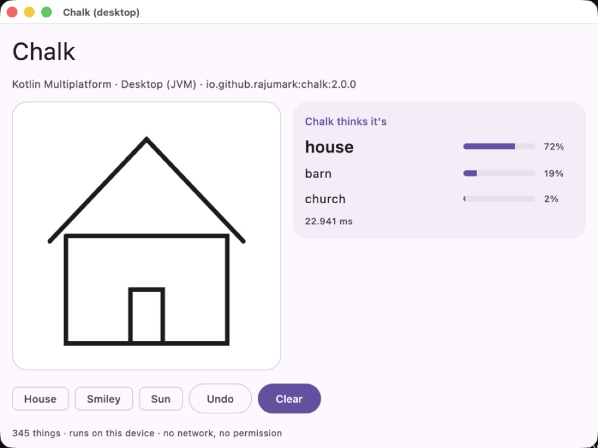
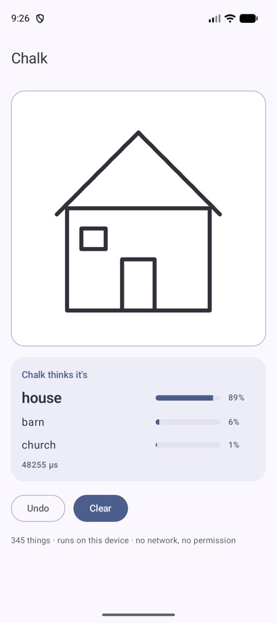
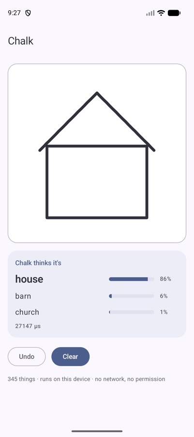
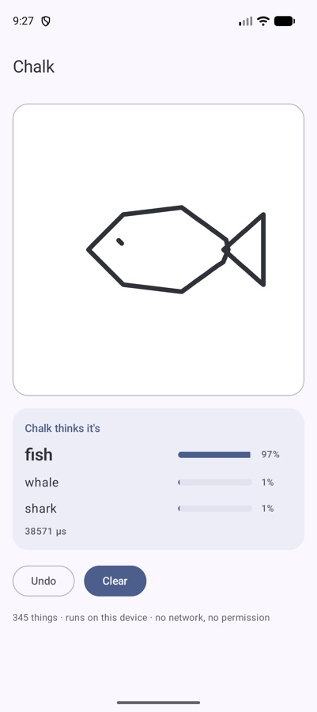

Strokes, not pixels: how a 1.8 MB model guesses your doodle before you finish it
The obvious way to recognise a doodle is to render it as an image and run a vision model. I did the opposite: Chalk reads the pen strokes in the order you drew them. This is how the pipeline works, and why that choice pays off.

The decision: read the pen, not the picture
A drawing on a touch screen isn't an image. It's a list of strokes, and each stroke is a list of points in the order the finger moved. An image throws most of that away: which line came first, which direction it went, where the finger lifted.
That information is exactly what makes a doodle recognisable early. A house usually starts with the walls, then the roof. A sun often starts with a circle, then rays. If you keep the order, the model can guess while the user is still drawing — like Google's Quick, Draw! game.
So Chalk takes strokes as input:
val square = Stroke.of(100f, 100f, 900f, 100f, 900f, 900f, 100f, 900f, 100f, 100f)
chalk.guess(listOf(square)) // [square, picture frame, …]
// a house drawn with 4 strokes
chalk.guess(strokes) // [house 0.89, barn 0.06, church 0.01]Size and position on screen don't matter. Pass raw screen pixels from a Compose pointerInput or View.onTouchEvent, one Stroke per finger-down to finger-up.
The pipeline
- Align. Move the drawing so its top-left corner is at the origin.
- Scale. Scale uniformly so the longer side is 255 units. A tiny doodle and a full-screen one look the same.
- Resample. Put points every unit along each stroke, so fast and slow fingers produce the same density.
- Simplify. Run the Ramer-Douglas-Peucker algorithm to drop points that sit on nearly straight lines. This is the same simplification Google applied to the QuickDraw dataset, so live input looks like the training data.
- Tokenise. Each remaining point, at most 128, becomes a token: its position, its step from the previous point, and whether it starts or ends a stroke.
- Read. A small transformer (4 layers, 1.6M parameters) reads the tokens in drawing order and averages them into one vector.
- Pick. That vector scores all 345 categories. The top few are your guesses.
Step 4 is the one that makes the model small. After simplification a typical doodle is a few dozen tokens, not the tens of thousands of pixels an image model has to look at. Less input means a smaller model can do the job.
Training for real fingers
QuickDraw drawings were made with a mouse or finger in a browser game, then cleaned up. Real input in an app is messier, and it arrives unfinished. So training added:
- random rotations and stretches,
- thinned-out points,
- half-finished drawings, cut off partway through the strokes.
That last one is why Chalk is good at guessing early. It has seen thousands of drawings that stop halfway, labelled with what they were going to become.



Results: small vs large
Measured on QuickDraw drawings never used for training (500 per category), fed through the same touch-input pipeline the library uses. The image models get each drawing rendered as a picture first.
| Chalk | BEiT-base sketch classifier | MobileViT-small | |
|---|---|---|---|
| Finished drawings: top-1 / top-3 | 81.5% / 94.3% | 83.3% / 95.6% | 70.6% / 87.9% |
| Half-drawn: top-1 / top-3 | 53.3% / 73.9% | 50.1% / 69.7% | 40.4% / 59.7% |
| Size | 1.8 MB | 348 MB | 21 MB |
| Latency, 1 CPU thread (Python, laptop) | ~1 ms | ~69 ms | ~2.5 ms |
Read it this way: a 193× larger image model is 1.8 points better on finished drawings. On half-finished drawings, which is what a live “guess as you draw” feature actually sees, the stroke model wins. And across all 172,500 test drawings it scores about the same for every country (India 80.4%, US 81.1%, UK 80.3%).
Engineering notes from the Kotlin port
Pure Kotlin is slower than SIMD Python, and that's fine. The ~1 ms above uses vectorised maths. In the pure-Kotlin library a guess takes about 13 ms on a laptop JVM, 25 ms on an Android emulator and 50–90 ms in a browser. Still fast enough to run after every stroke.
One maths function broke parity on one drawing. Every platform is tested against the reference on 150 drawings and must agree. On Apple platforms and JavaScript, the system hypot rounds slightly differently from the JVM's, and that tiny difference, after resampling and simplification, changed the result on 1 of the 150 drawings. The fix was a common fdlibm-style hypot in shared code, so all six platforms compute the same distances bit for bit. The kind of bug that takes a day to find and one function to fix.
No runtime to ship. No TFLite, no ONNX Runtime, no native code. The 1.7 MB of int8 weights ship inside the library, and the whole thing runs on Android, iOS, macOS, JVM desktop, JavaScript and WebAssembly.
Where it struggles
Some categories look alike when drawn quickly. The hardest are marker, bear, garden hose, aircraft carrier, cooler and cup (34–45% top-1). The easiest — helicopter, angel, wine glass, star, ladder and The Mona Lisa — are 97–98%. Very neat, computer-made shapes are harder than hand-drawn ones: a perfect triangle is a close call between “triangle” and “see saw”. And it only knows the 345 QuickDraw categories; anything else gets the nearest one.
Try it
// build.gradle.kts
implementation("io.github.rajumark:chalk:2.0.0")
val chalk = Chalk() // load once, off the main thread
strokes += Stroke(xs.toFloatArray(), ys.toFloatArray()) // on finger up
val best = chalk.guess(strokes).firstOrNull()Drawing games, kids' learning apps, sketch search, a whiteboard that tidies shapes: they all get better when the app understands what's being drawn while it's being drawn. That's the whole bet behind reading the pen instead of the picture.
The Hoverfly series. Eight small on-device models, one job each, all plain Kotlin Multiplatform with no native code. Each post is written differently, because each model taught me something different.
- Moji — emoji suggestions, told as a story
- Beacon — language detection, as a benchmark report
- Comma — punctuation restoration, as a step-by-step tutorial
- Comeback — smart replies, as an honest opinion piece
- Emotion — emotion detection, as questions and answers
- Gatekeeper — toxicity detection, as a practical playbook
- Hideout — personal info hiding, as an audit checklist
- Chalk — doodle recognition, as an engineering deep dive (you are here)